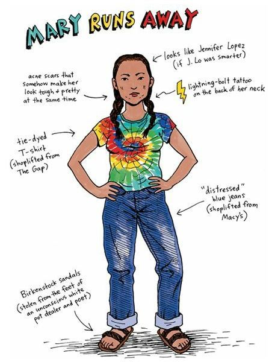
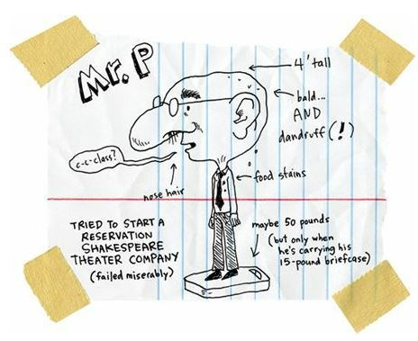
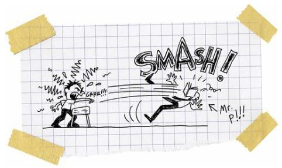

Because Geometry Is Not a Country Somewhere Near France
I was fourteen and it was my first day of high school. I was happy about that. And I was most especially excited about my first geometry class.
Yep, I have to admit that isosceles triangles make me feel hormonal.
Most guys, no matter what age, get excited about curves and circles, but not me. Don’t get me wrong. I like girls and their curves. And I really like women and their curvier curves.
I spend hours in the bathroom with a magazine that has one thousand pictures of naked movie stars:
Naked woman + right hand = happy happy joy joy
Yep, that’s right, I admit that I masturbate.
I’m proud of it.
I’m good at it.
I’m ambidextrous.
If there were a Professional Masturbators League, I’d get drafted number one and make millions of dollars.
And maybe you’re thinking, “Well, you really shouldn’t be talking about masturbation in public.”
Well, tough, I’m going to talk about it because EVERYBODY does it. And EVERYBODY likes it.
And if God hadn’t wanted us to masturbate, then God wouldn’t have given us thumbs.
So I thank God for my thumbs.
But, the thing is, no matter how much time my thumbs and I spend with the curves of imaginary women, I am much more in love with the right angles of buildings.
When I was a baby, I’d crawl under my bed and snuggle into a corner to sleep. I just felt warm and safe leaning into two walls at the same time.
When I was eight, nine, and ten, I slept in my bedroom closet with the door closed. I only stopped doing that because my big sister, Mary, told me that I was just trying to find my way back into my mother’s womb.
That ruined the whole closet thing.
Don’t get me wrong. I don’t have anything against my mother’s womb. I was built in there, after all. So I have to say that I am pro-womb. But I have zero interest in moving back home, so to speak.
My sister is good at ruining things.
After high school, my sister just froze. Didn’t go to college, didn’t get a job. Didn’t do anything. Kind of sad, I guess. But she is also beautiful and strong and funny. She is the prettiest and strongest and funniest person who ever spent twenty-three hours a day alone in a basement.

She is so crazy and random that we call her Mary Runs Away. I’m not like her at all. I am steady. I’m excited about life.
I’m excited about school.
Rowdy and I are planning on playing high school basketball.
Last year, Rowdy and I were the best players on the eighth-grade team. But I don’t think I’ll be a very good high school player.
Rowdy is probably going to start varsity as a freshman, but I figure the bigger and better kids will crush me. It’s one thing to hit jumpers over other eighth graders; it’s a whole other thing to score on high school monsters.
I’ll probably be a benchwarmer on the C squad while Rowdy goes on to all-state glory and fame.
I am a little worried that Rowdy will start to hang around with the older guys and leave me behind.
I’m also worried that he’ll start to pick on me, too.
I’m scared he might start hating me as much as all of the others do.
But I am more happy than scared.
And I know that the other kids are going to give me crap for being so excited about school. But I don’t care.
I was sitting in a freshman classroom at Wellpinit High School when Mr. P strolled in with a box full of geometry textbooks.
And let me tell you, Mr. P is a weird-looking dude.
But no matter how weird he looks, the absolutely weirdest thing about Mr. P is that sometimes he forgets to come to school.

Let me repeat that: MR. P SOMETIMES FORGETS TO COME TO SCHOOL!
Yep, we have to send a kid down to the teachers’ housing compound behind the school to wake Mr. P, who is always conking out in front of his TV.
That’s right. Mr. P sometimes teaches class in his pajamas.
He is a weird old coot, but most of the kids dig him because he doesn’t ask too much of us. I mean, how can you expect your students to work hard if you show up in your pajamas and slippers?
And yeah, I know it’s weird, but the tribe actually houses all of the teachers in one-bedroom cottages and musty, old trailer houses behind the school. You can’t teach at our school if you don’t live in the compound. It was like some kind of prison-work farm for our liberal, white, vegetarian do-gooders and conservative, white missionary saviors.
Some of our teachers make us eat birdseed so we’ll feel closer to the earth, and other teachers hate birds because they are supposedly minions of the Devil. It is like being taught by Jekyll and Hyde.
But Mr. P isn’t a Democratic-, Republican-, Christian-, or Devil-worshipping freak. He is just sleepy.
But some folks are absolutely convinced he is, like, this Sicilian accountant who testified against the Mafia, and had to be hidden by that secret Witness Relocation Program.
It makes some goofy sort of sense, I suppose.
If the government wants to hide somebody, there’s probably no place more isolated than my reservation, which is located approximately one million miles north of Important and two billion miles west of Happy. But jeez, I think people pay way too much attention to The Sopranos.
Mostly, I just think Mr. P is a lonely old man who used to be a lonely young man. And for some reason I don’t understand, lonely white people love to hang around lonelier Indians.
“All right, kids, let’s get cracking,” Mr. P said as he passed out the geometry books. “How about we do something strange and start on page one?”
I grabbed my book and opened it up.
I wanted to smell it.
Heck, I wanted to kiss it.
Yes, kiss it.
That’s right, I am a book kisser.
Maybe that’s kind of perverted or maybe it’s just romantic and highly intelligent.
But my lips and I stopped short when I saw this written on the inside front cover:
THIS BOOK BELONGS TO AGNES ADAMS
Okay, now you’re probably asking yourself, “Who is Agnes Adams?”
Well, let me tell you. Agnes Adams is my mother. MY MOTHER! And Adams is her maiden name.
So that means my mother was born an Adams and she was still an Adams when she wrote her name in that book. And she was thirty when she gave birth to me. Yep, so that means I was staring at a geometry book that was at least thirty years older than I was.
I couldn’t believe it.
How horrible is that?
My school and my tribe are so poor and sad that we have to study from the same dang books our parents studied from. That is absolutely the saddest thing in the world.
And let me tell you, that old, old, old, decrepit geometry book hit my heart with the force of a nuclear bomb. My hopes and dreams floated up in a mushroom cloud. What do you do when the world has declared nuclear war on you?
